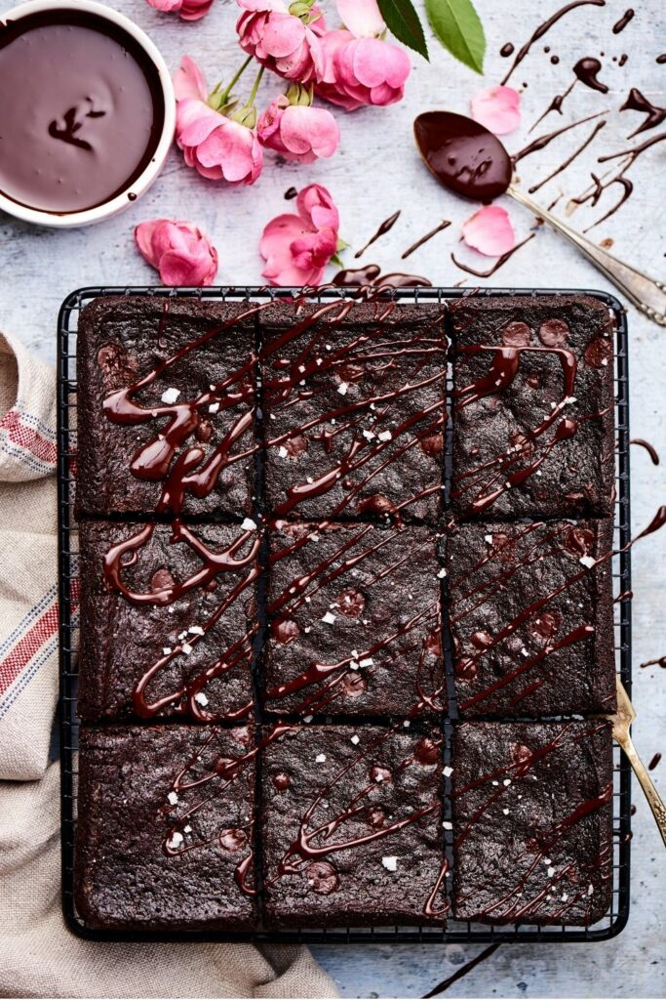

Low calorie brownies

Description
These low calorie healthy brownies are just as rich, fudgy,
and sweet as "regular" brownies, but without all the calories,
sugar, and dairy!
Yep, these are dairy free brownies too.
Ingredients
- 60g white whole wheat flour
- half a teaspoon Baking Powder
- a pinch of salt
- 30g of unsweetened cocoa powder
- tablespoon of honey
- 120g of unsweetened apple sauce
- 2 tablespoons of coconut oil, melted
- 1 egg
- 50g of sugar free chocolate chips
Steps
- Preheat your oven to 180°C
- Mix the ingredients.
- Pour your brownie batter into the tray.
- Bake them for about 25 minutes.
- Let them cool in the tray for about 5 minutes.